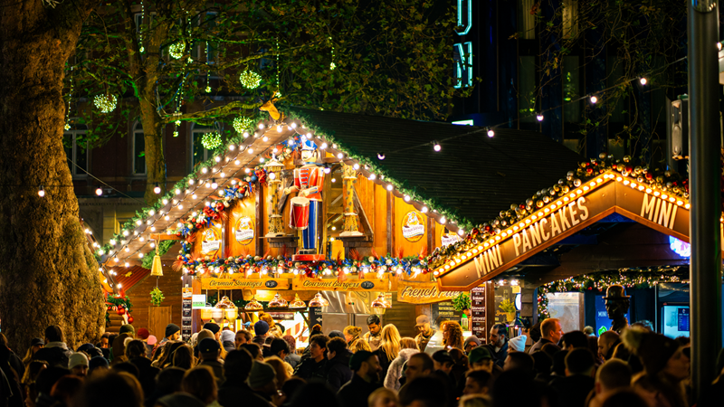
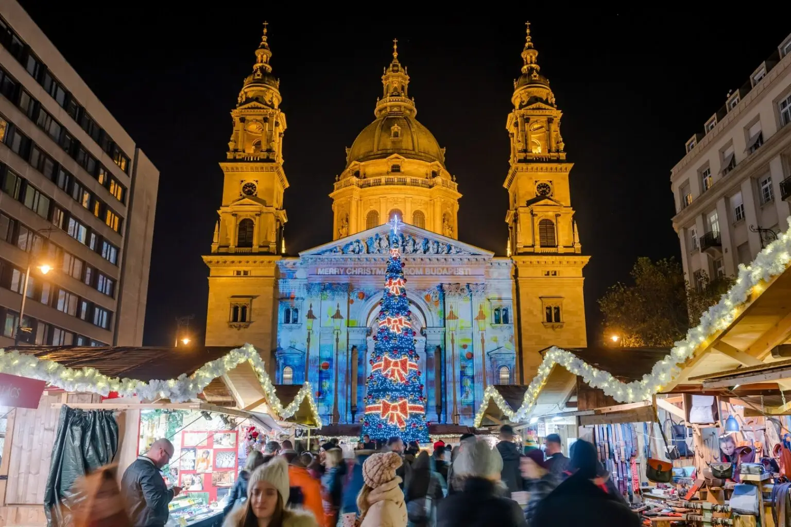
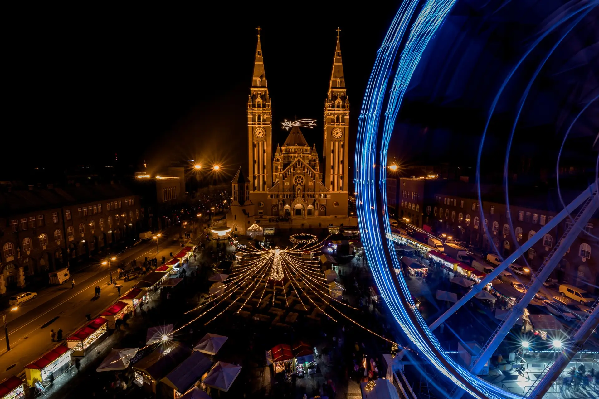
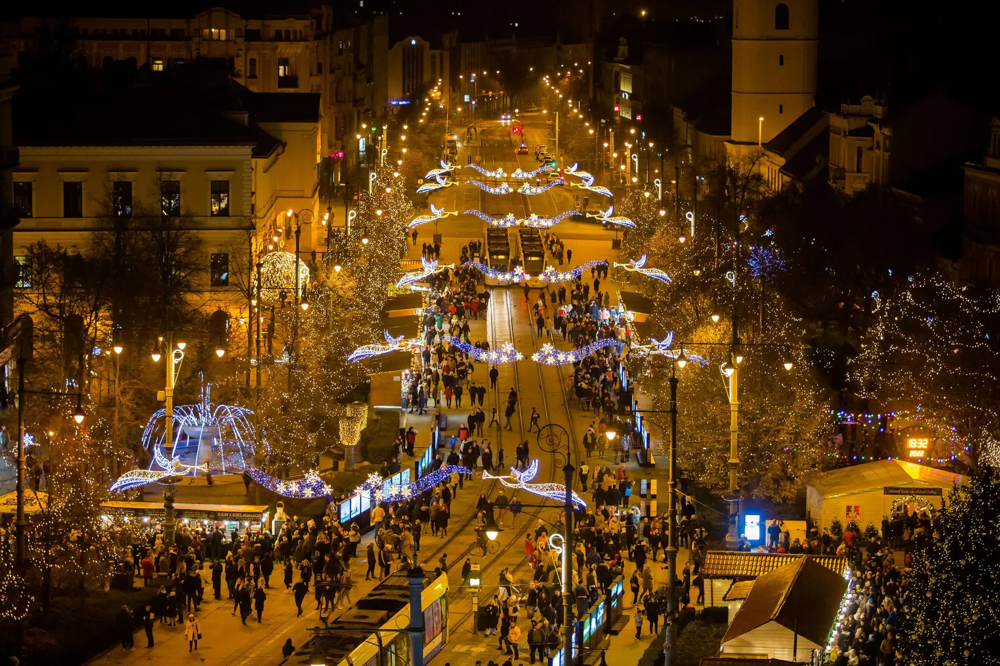
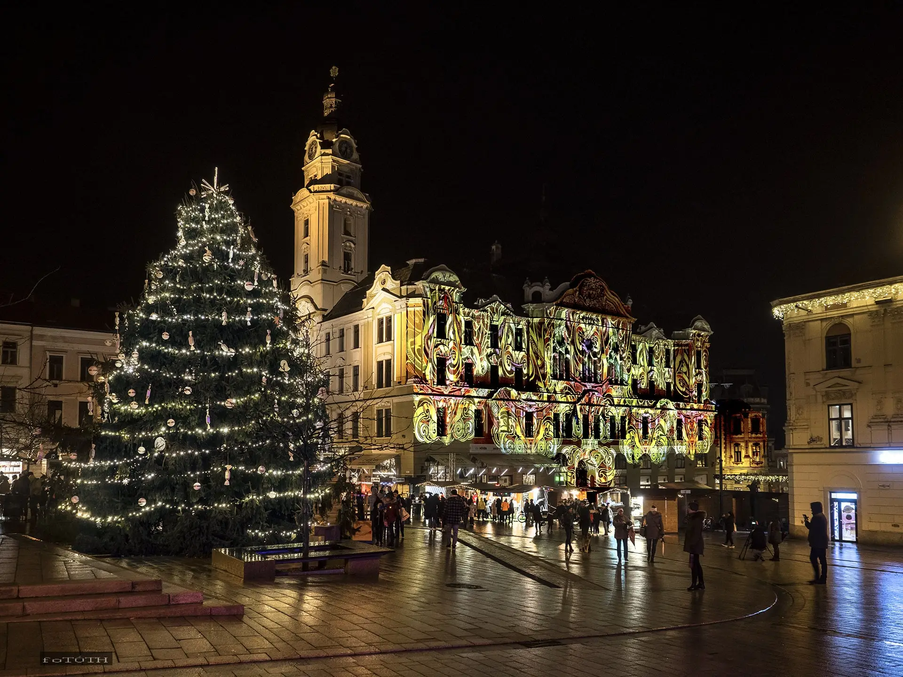
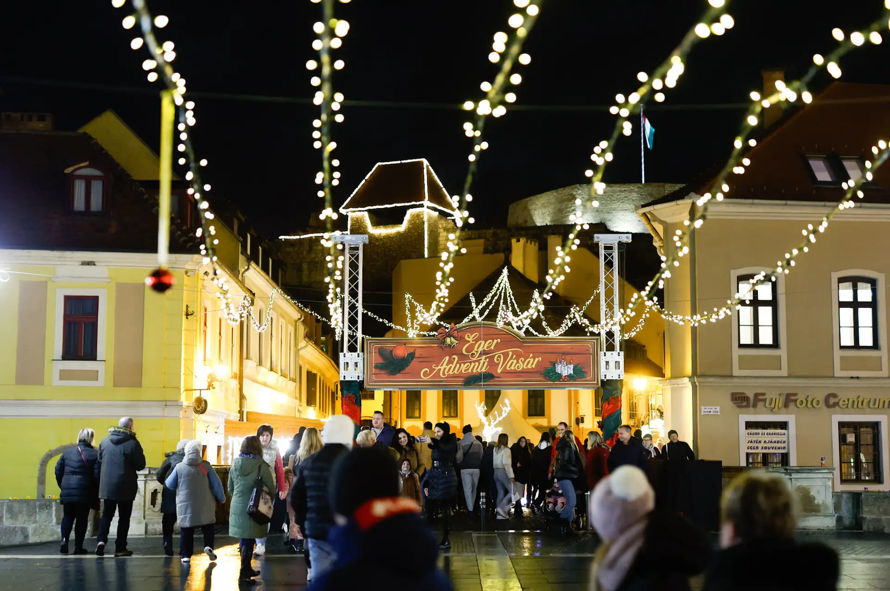

A karácsonyi vásárok különleges hangulata minden évben emberek millióit varázsolja el. A fényekkel díszített utcák, a forralt bor illata és a kézműves portékák együttese igazi ünnepi élményt nyújt. Összegyűjtöttünk öt olyan lenyűgöző karácsonyi vásárt, amelyek 2026-ban is felejthetetlen élményt kínálnak – akár utazást tervezel, akár csak inspirációt keresel az ünnepekre.
1# Karácsonyi vásár a Bazilikánál és a Vörösmarty téren

Szent István Bazilika
A tél beköszöntével szívünk megtelik örömteli várakozással, és megkezdődik a lelki készülődés a karácsonyi ünnepekre. Erre remek ráhangolódást nyújtanak a karácsonyi vásárok, amelyek díszkivilágítással, téli finomságok illatával, kellemes zenével és míves ajándéktárgyakkal melengetik meg a látogatók szívét. Lássuk, hogy Magyarországon melyik az az öt varázslatos adventi vásár, ahová mindenképp érdemes ellátogatnod!
2# Adventi Ünnep a Győri Városháza előtt

Szegedi Karácsonyi Hetek
A Szegedi Karácsonyi Hetek néven megrendezésre kerülő karácsonyi vásár a híres Fogadalmi templom körül, a Dóm téren kerül minden évben megrendezésre. A hagyományoknak megfelelően advent első vasárnapja előtt, december elsején nyílik. A dóm előtt egy hatalmas kivilágított adventi koszorú emeli a karácsonyi hangulatot. A fényárban úszó vásárban finom illatok szállingóznak, a bájos fabódékban pedig ínycsiklandozó frissen sült ételeket, míves portékákat kínálnak az árusok. A gyermekeknek pedig mindig nagy öröm az ilyenkor felépített szalmalabirintus, látványos tűzzsonglőrök előadása, a körhinta vagy a póniló lovaglási lehetőség
3# Debreceni Adventi Vásár

Debreceni Advent
A Debreceni Adventi Vásár hazánk egyik legszebb és legnagyobb karácsonyi vására, amely megidézi a századforduló adventi miliőjét. Pompás díszkivilágítás, minőségi hagyományos és modern kézműves portékák, tradicionális magyar konyha, és színvonalas programok jellemzik a vásárt, ahol a fenyő, a sült gesztenye, és a forralt bor illatai fokozzák az ünnepi hangulatot. A látogatókat jégkorcsolya pálya, a kisebbeket pedig gyerekvasút várja. A vásárban a régi népszokások is bemutatásra kerülnek: népviseletben kántálók, néptáncosok, és betlehemesek teszik élővé az elfeledett karácsonyi hagyományainkat.
4# Adventi Kézműves és Mesevásár, Pécs

Advent Pécs
Pécsett a Széchenyi téren egy valódi mesebeli karácsonyi vásár tárul a látogatók elé, amely főként gyermekprogramokkal kedveskedik. A varázslatos történelmi épületek között fényben pompázó karácsonyfa és vásáros házikók állnak. Minden évben a gyermekek épületfestő rajzpályázatra nevezhetnek karácsonyi témában. A szebb alkotásokat pedig kivetítik az egykori török dzsámira, azaz a Gyertyaszentelő Boldogasszony-templomra, amely ilyenkor káprázatos látványt nyújt.
5# Eger Adventi Vásár

Eger Advent
Egerben a Dobó István téren igazi nosztalgikus karácsonyi vásárban hangolódhatunk az ünnepekre. A kézműves és vendéglátós árusítók minőségi termékeket kínálnak, külön kiemelendők az egri borászok, akik a legfinomabb nedűikkel képviseltetik magukat a vásáron. Emellett színvonalas programok: koncertek, művészeti előadások, fellépések nyújtanak feledhetetlen téli élményeket kicsiknek és nagyoknak egyaránt. December 6-án pedig még a Mikulás is ellátogat ide, hogy találkozhasson a gyermekekkel.
{kind=link}